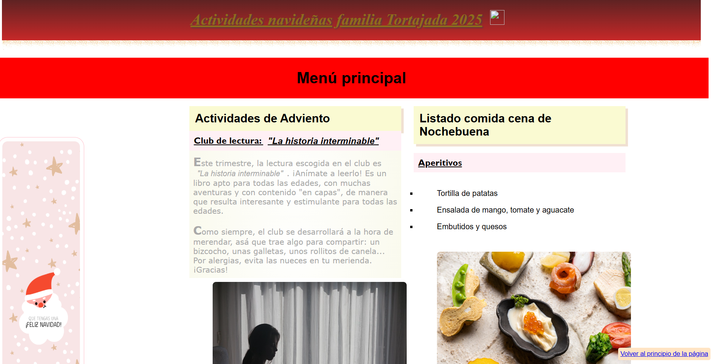
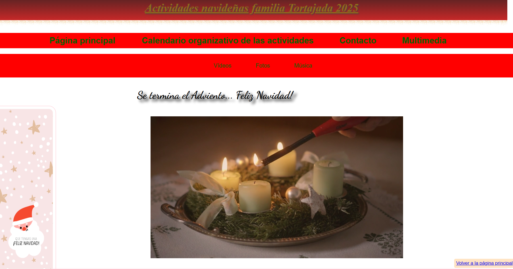
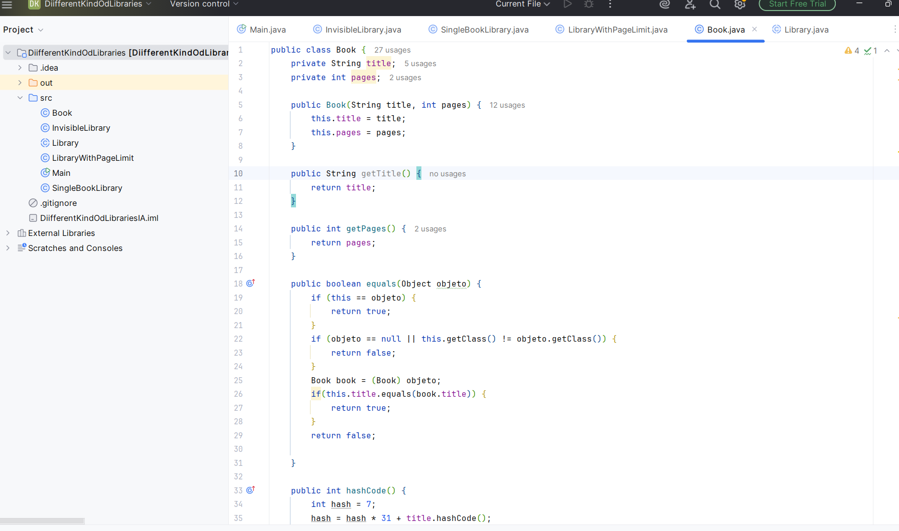
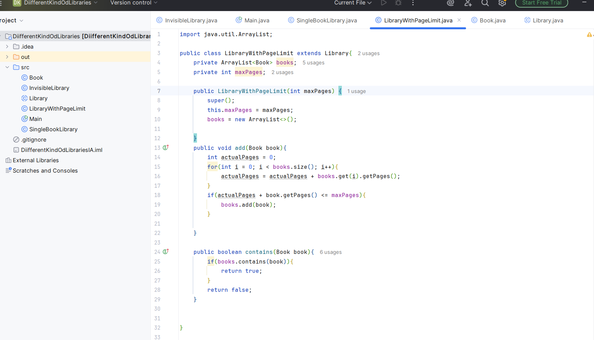
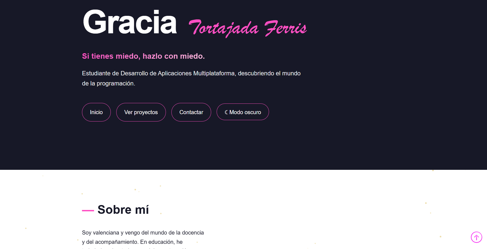
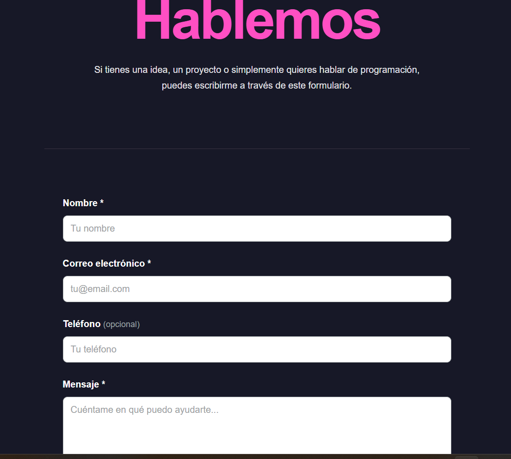

Proyectos
Una selección de proyectos que he realizado durante mi
formación y de proyectos personales.
Proyecto académico · Lenguaje de Marcas
Uno de los proyectos que realicé durante mi formación
en Lenguaje de Marcas, donde trabajé con HTML y CSS
para crear y estructurar una página web. Posteriormente
le añadí algunas interacciones usando JavaScript.
Este proyecto me permitió practicar la estructura
de una página web, los estilos y la organización
del contenido. Aunque tiene una apariencia peculiar, puesto que
al ser un ejercicio tenía que utilizar determinados recursos de forma
obligatoria y algunos de ellos están bastante forzados, fue un modo práctico de
ir integrando los diferentes aprendizajes a lo largo del curso.


Proyecto académico · Sistema de bibliotecas en Java
Proyecto realizado durante mi formación autodidacta en Java
mediante el MOOC de Java de la Universidad de Helsinki.
En este proyecto trabajé conceptos de programación orientada
a objetos creando diferentes tipos de bibliotecas y definiendo
comportamientos distintos para cada una. Quise hacerlo como actividad extra
complementaria a las propuestas por el propio MOOC para poder consolidar los aprendizajes y
coger un poco de experiencia práctica.
El programa incluye una biblioteca con un límite máximo de
páginas, una biblioteca que solo permite almacenar un libro
y una biblioteca sin límite específico. También trabajé la
comparación de objetos mediante equals() y
hashCode().


Mi web personal · 2026
Este página constituye mi tercer proyecto personal. Consiste en la creación de una web
de presentación y poner en práctica los conocimientos
que estoy adquiriendo en Desarrollo de Aplicaciones
Multiplataforma.
Durante su desarrollo he trabajado con HTML, CSS,
JavaScript y Git/GitHub, realizando diferentes
iteraciones y cambios de diseño hasta llegar a
la versión actual, apoyándome del uso de la IA.

